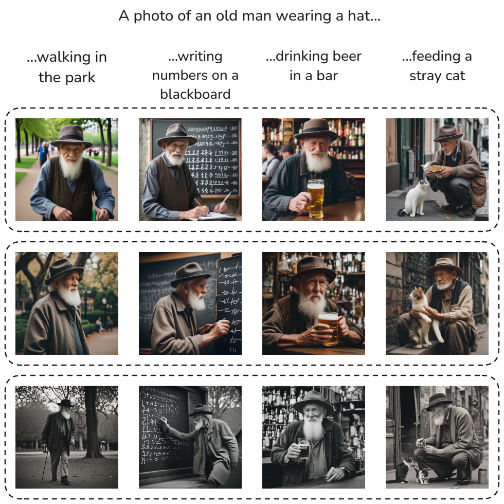
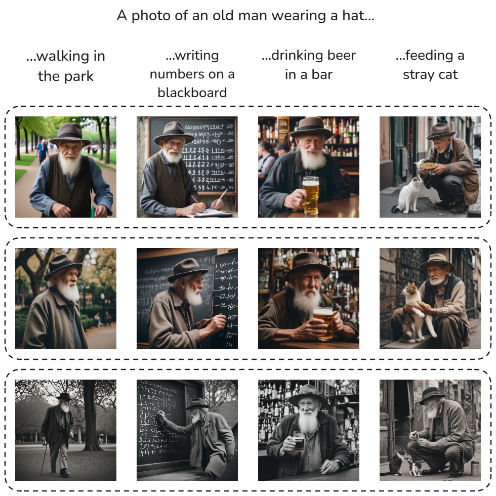

Multi-seed consistency
StorySync is able to achieve consistency across multiple seeds. This allows for generating visually consistent subjects in different scenes and visual styles.
Generating a coherent sequence of images that tells a visual story, using text-to-image diffusion models, often faces the critical challenge of maintaining subject consistency across all story scenes. Existing approaches, which typically rely on fine-tuning or retraining models, are computationally expensive, time-consuming, and often interfere with the model's pre-existing capabilities.
In this paper, we follow a training-free approach and propose an efficient consistent-subject-generation method. This approach works seamlessly with pre-trained diffusion models by introducing masked cross-image attention sharing to dynamically align subject features across a batch of images, and Regional Feature Harmonization to refine visually similar details for improved subject consistency.
Experimental results demonstrate that our approach successfully generates visually consistent subjects across a variety of scenarios while maintaining the creative abilities of the diffusion model.
Overview of the StorySync approach.
StorySync is able to achieve consistency across multiple seeds. This allows for generating visually consistent subjects in different scenes and visual styles.
Our method can also generate multiple consistent subjects in a single image. This is achieved by sharing attention across subject patches.

We compare our method with existing training-free methods (ConsiStory, and StoryDiffusion) in a qualitative manner.

@misc{gaur2025storysynctrainingfreesubjectconsistency,
title={StorySync: Training-Free Subject Consistency in Text-to-Image Generation via Region Harmonization},
author={Gopalji Gaur and Mohammadreza Zolfaghari and Thomas Brox},
year={2025},
eprint={2508.03735},
archivePrefix={arXiv},
primaryClass={cs.CV},
url={https://arxiv.org/abs/2508.03735},
}